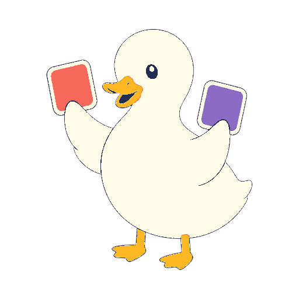
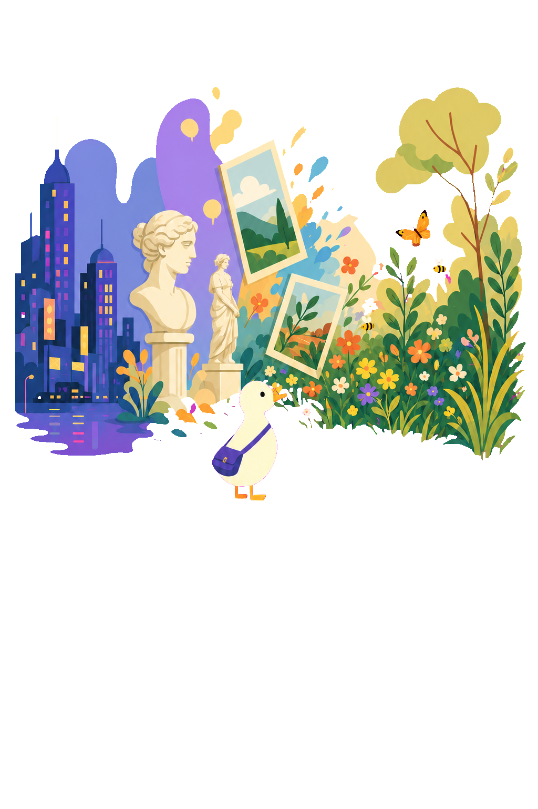
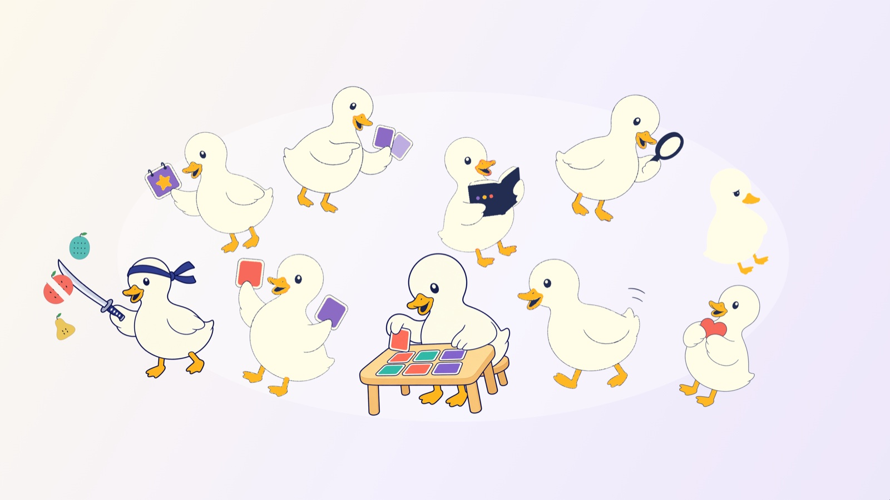
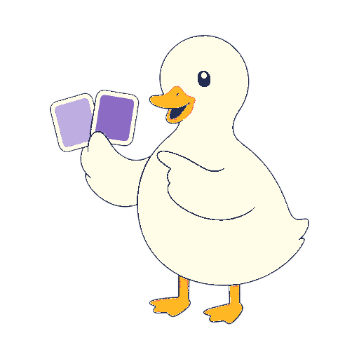
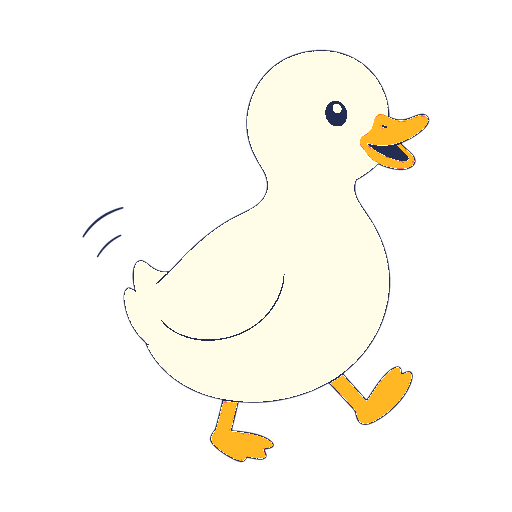
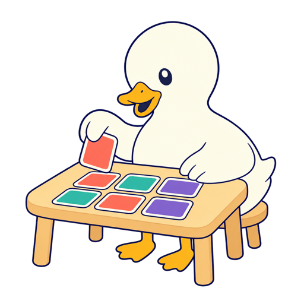
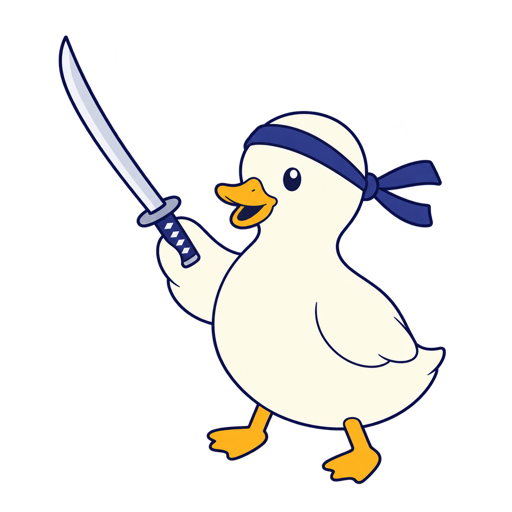
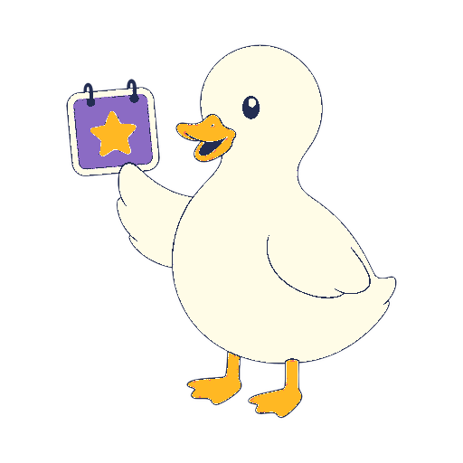

Spectrum Explorer
Find the family
Explore neighbouring colour families, notice where one seems to become another, and reveal descriptive vocabulary after each choice.

ColourTrainer Available
Three training paths, two playful games, and a Daily Mix you can make your own. Explore colour families, compare tones, match pairs and slice the target colours on iPhone and iPad.
ColourTrainer is an educational game. It is not a vision test, diagnosis, treatment, display-calibration tool, or evidence that your eyesight has changed.

Learn by playing
Practise at your own pace with Spectrum Explorer, Tone Specialist and Colour in Motion. Choose Classic, Progressive or a fixed difficulty, adjust session length and continue saved progress. Training answers are untimed and offer “I cannot tell”.

Spectrum Explorer
Explore neighbouring colour families, notice where one seems to become another, and reveal descriptive vocabulary after each choice.

Tone Specialist
Pick the odd tile while the game changes one controlled quality at a time: hue, lightness, or chroma.

Colour in Motion
Find colours in layered, animated scenes with shapes and ducks that fly, swim and walk. Decorative artwork remains separate from the exact challenge colours.
Fun while training
Match a pair, catch the right colour, and come back for another round. Both games are free, with four difficulties from Easy to Extreme.

Flip & Match
Turn over cards and remember where the colours are. Choose from six board sizes: 6, 12, 16, 20, 30 or 42 cards. Varied colour families keep you looking closely as difficulty increases.
Continue an unfinished game, then copy its seed from the completion summary.

Colour Slice · New in 1.1.1
Follow one to three named target colours and slice matching fruit as it spins and arcs across the screen. Palettes change during play, with a splash and a moment to see the new targets.
Pick a 1-, 2- or 5-minute game. Higher difficulties bring closer colour choices and faster fruit. Missed targets name the colour you missed, without a penalty.
With VoiceOver or Reduce Motion, Slice uses stationary fruit and untimed play.
Daily Colour Mix
Combine Spectrum, Tone and Motion exercises in a daily challenge of 10–100 training rounds. Add Flip & Match, a short one-minute Colour Slice game, or both.
Shuffle the activities, or use each game’s separate Keep at the end switch. Resume an unfinished mix and revisit recent runs.
Every completion summary exposes its seed with a copy button. Share a Daily challenge code so a friend can try the same mix with newly arranged questions and objects.

A little discovery, every day
All training, games, Daily Challenges, learning content and widgets are free. Optional supporter purchases unlock four daypart wallpaper sets for phones and 16:10 desktops and remove the optional Home support prompt. Every supporter tier grants the same benefits; repeat tips add no features. Supporter and restore help.
Why practise colour?
The research supports a modest idea: repeated, specific practice can change performance on colour tasks, and learning names can shape how adults categorise what they see. It does not show that a phone game can clinically improve eyesight.
A 2024 study found lower colour-discrimination thresholds after five days of repeated practice. The effects were strongest around trained colours, and the authors also observed shifts in colour appearance and category boundaries.
Read the Scientific Reports studyAdults trained on newly named green and blue subcategories learned the labels quickly; behavioural and brain-imaging results showed that category learning can influence colour processing.
Read the PNAS studyPutting words to lightness, chroma, hue, and neighbouring families gives you a repeatable way to compare colours—useful for conversation, art, design, shopping, nature, and simple curiosity.
This is a practical inference from discrimination and category-learning research, not a promised outcome.It means practising a task and learning language for it. Improvements may be specific to the trained colours, task, display, or viewing context. ColourTrainer reports performance only inside the trainer.
Including colour-vision deficiency
People with colour-vision deficiency may still enjoy the vocabulary, comparison, and self-paced practice. Research reports that dichromatic observers can often name colours accurately by learning subtle visual cues and shared language, even when particular hues remain difficult to discriminate.
That can make training useful as practice in noticing available cues and learning labels. It is not a cure, treatment, screening tool, or promise of normal colour vision.
Sources, standards, and naming
ColourTrainer uses published technical references to generate reproducible on-screen exercises. Those references do not make a phone a calibrated instrument or settle what every person should call a colour.
The app uses a 23 July 2026 snapshot of the CSS named-colour table for stable English identifiers and exact sRGB samples. W3C does not define ColourTrainer’s family boundaries, curriculum, descriptions, or cultural meanings.
W3C named coloursChallenges are authored in OKLCH, converted to tested sRGB output, and may use CIEDE2000 to describe a displayed pair. Numeric distance guides generation; it does not guarantee identical perception.
OKLab referenceGuidance about colour-changing display settings draws on Apple’s descriptions of Night Shift and Colour Filters. The app cannot infer every display, accessibility, lighting, or environmental condition.
Night ShiftColour FiltersLarge cross-language studies find shared motifs as well as real diversity within and between languages. Colour names and boundaries can vary with language, community, culture, and individual experience.
Read the PNAS studyMaterial copied from or derived from CSS Color Module Level 4 is copyright © 2026 World Wide Web Consortium and used under the W3C Software and Document Notice and License.
Availability
Important notes
Help and policies
Read how ColourTrainer handles data, or find help with the app, purchases, reminders, widgets, and supporter wallpapers.